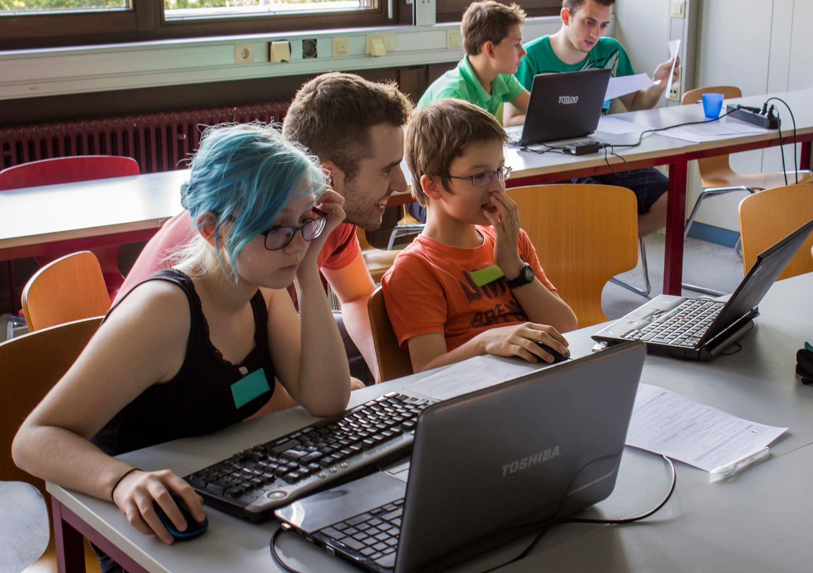
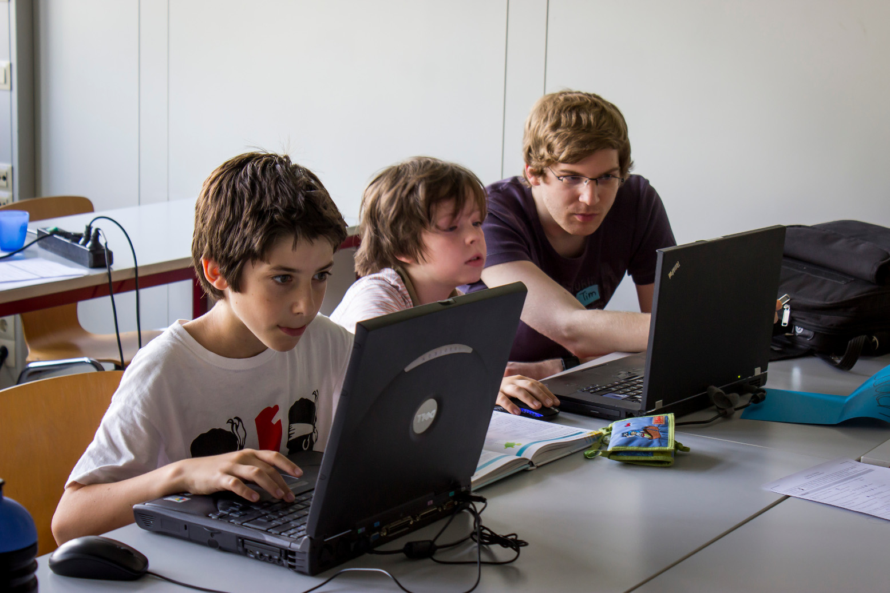

|
Nächstes Treffen
|
4. Dezember |
|
neu
|
Rätsel der Woche |
CoderDojo ist eine weltweit verbreitete gemeinnützige Organisation, deren Ziel es ist, Kindern und Jugendlichen Computer, Technik und vor allem das Programmieren näherzubringen. Die internationale Webseite findet ihr hier.
Programmieren zu können ist eine Fähigkeit, die heutzutage immer wichtiger wird. Wie bei vielen Fähigkeiten gilt auch hier: je früher mit dem Erlernen begonnen wird, desto besser. Leider ist das Programmieren noch kein fester Bestandteil im Schulalltag der Kinder. Dadurch entstand unsere Vision, ein CoderDojo in Karlsruhe einzurichten, um interessierten Kindern die Möglichkeit zu geben, programmieren zu lernen und sie in diesem Bereich zu fördern.
Unsere Treffen finden alle zwei Wochen statt. Die teilnehmenden Kinder und Jugendlichen werden hierbei von Studenten und Mentoren aus technischen Bereichen betreut, während sie programmieren und unter kompetenter Anleitung ihre Fähigkeiten entwickeln und ausbauen. Alle in diesem Projekt mitwirkenden Mentoren engagieren sich ehrenamtlich und so sind die Treffen auch für alle Kinder kostenlos.
Das nächste Treffen findet am Freitag, dem 25.09.2015 von 16.30 Uhr bis 18.30 Uhr im Seminarraum 236 der Fakultät für Informatik im Gebäude 50.34 am KIT statt.
Die unten aufgelisteten Termine finden alle im Gebäude 50.34 des KIT statt. Es gehört zur Fakultät für Informatik, die uns den Seminarraum für unsere Treffen zur Verfügung stellt.
Am einfachsten lässt sich das herausfinden, indem Sie das mit Ihrem Kind einfach mal ausprobieren! Wir erheben keine Teilnehmergebühr, und wenn Ihr Kind Spaß bei uns hat, dann freuen wir uns, es wieder bei uns zu begrüßen!
Wir bieten das CoderDojo für Kinder und Jugendliche von 10 bis 18 Jahren an. Falls Ihr Kind jünger als 13 Jahre ist, müssen Sie es allerdings zu CoderDojo begleiten.
Bei uns kann man bei jedem Treffen einsteigen. Wir versuchen jedes Mal etwas für Anfänger als auch für Fortgeschrittene anzubieten.
Nein. Gerade das soll Ihr Kind ja bei uns lernen können! Wir wollen ein Umfeld bieten, in dem interessierte Kinder und Jugendliche gemeinsam etwas ausprobieren. Wir, die Mentoren, helfen weiter, wenn es zu knifflig wird. Falls Ihr Kind schon programmieren kann, begleiten wir gerne die Schritte zu komplexeren Projekten.
Es ist einfacher, wenn Ihr Kind schon mal Computer bedient hat – aber auch das können wir schnell nachholen.
Es wäre super wenn Ihr Kind einen Laptop mitbringen könnte. Wenn das nicht möglich ist, sagen Sie uns bitte bei der Anmeldung unbedingt Bescheid – wir versuchen dann ein Laptop zur Verfügung zu stellen.
Jedes Laptop mit einem Betriebssystem wie Windows, Mac OS oder Linux ist ausreichend. Das Laptop muss nicht neu oder besonders schnell sein. iPads, Android-Tablets oder Smartphones sind allerdings nicht zum Programmieren geeignet.
Sehr gerne! Es gibt viele Dinge an einem Dojo, die nichts mit Computern zu tun haben. Je mehr Eltern mitmachen, desto mehr Zeit haben die Mentoren zum Helfen.
Wir haben einige spannende Projekte, die wir vorschlagen können. Allerdings richten wir uns da ganz nach den Kindern, sind offen für ihre Vorschläge und möchten wissen, was sie schon immer mal am Computer selbst ausprobieren wollten. Unsere Mentoren haben selbst ganz unterschiedliche Schwerpunkte und so können wir viele verschiedene Projekte begleiten.
Um uns die Planung der Treffen zu erleichtern, sollte sich jeder, der teilnehmen will, vorher bei uns per Mail unter coderdojo.karlsruhe@gmail.com anmelden. Wenn ihr das erste Mal kommt, ist es auch gut für uns vorher zu wissen, wie alt ihr seit und was für Vorkentnisse ihr mitbringt.
Vor allem jüngere Kinder (bis ca. 12 Jahre) müssen von ihren Eltern zu diesen Treffen begleitet werden. Eltern älterer Kinder können aber auch gerne bleiben und das Dojo aktiv mitgestalten.
Die Teilnehmer sollten einen eigenen Laptop mitbringen. Ist dies nicht möglich, kann in Ausnahmefällen eine Lösung gefunden werden, sofern wir schon in der Anmeldungsmail Bescheid bekommen.
Außerdem sollten bei der ersten Teilnahme die Teilnahmebedingungen ausgedruckt, ausgefüllt und unterschrieben mitgebracht werden.
Wir sind noch auf der Suche nach weiteren Mentoren. Falls ihr Interesse habt als Mentor beim CoderDojo Karlsruhe mitzumachen, schreibt uns einfach eine Mail.

CoderDojo Karlsruhe
c/o AStA KIT
Adenauerring 7
76131 Karlsruhe
Beim Fragen und Anregungen wenden Sie sich einfach per Mail an: coderdojo.karlsruhe@gmail.com
Karlsruher Institut für Technologie (KIT)
Fakultät für Informatik
Gebäude 50.34
Am Fasanengarten 5
76131 Karlsruhe
{kind=link}
{kind=link}
{kind=link}